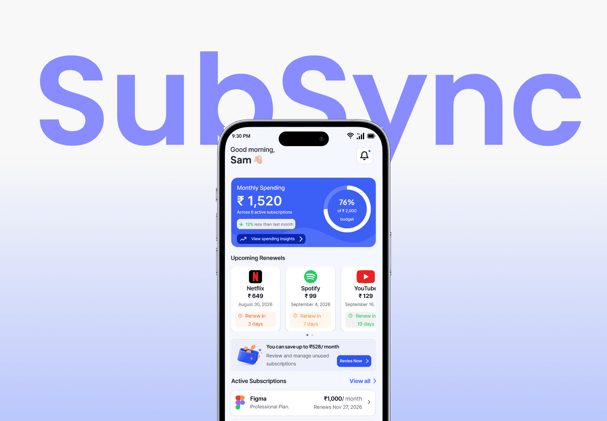
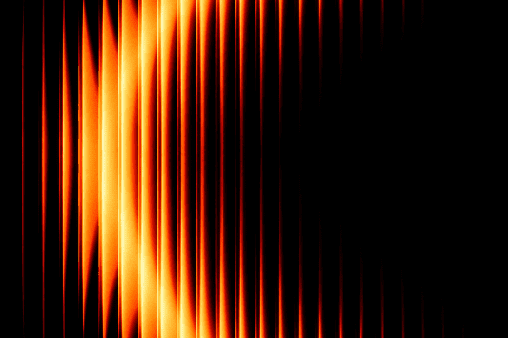
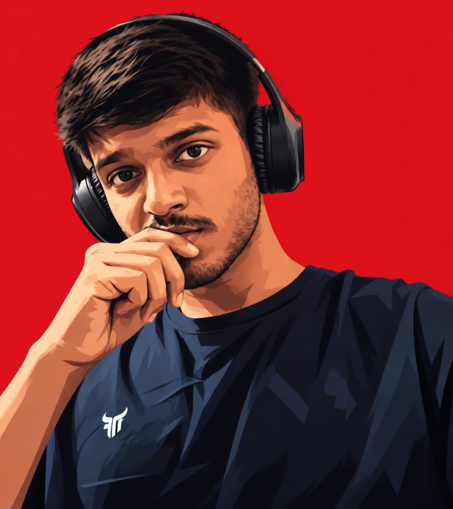
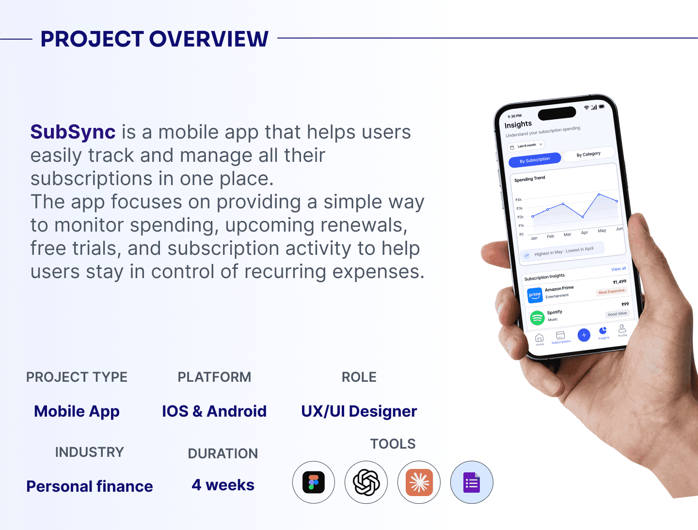

B.Sc. Information Technology
D.G. Ruparel College, Mumbai (University of Mumbai)


I use AI tools to brainstorm ideas, explore directions, refine content, and speed up repetitive tasks. I see AI as a creative assistant that supports my process while keeping design decisions grounded in user needs.
I enjoy breaking complex challenges into smaller, manageable problems. I explore different solutions and focus on practical design decisions that balance user needs with product goals.
I pay attention to the small details that shape an experience from spacing and hierarchy to interactions and consistency. Thoughtful details help make a product feel clear, polished, and intentional.
UX and technology are constantly evolving, and so am I. I'm continuously learning new tools, exploring AI-assisted workflows, studying products, and improving my design process.

Hey! I'm Saurav, a UX/UI designer from Mumbai, focused on creating simple, intuitive and visually engaging digital experiences.
I believe good design lives in the details — from thoughtful micro-interactions to clear information architecture. My goal is always to balance user needs with business goals, crafting products that feel effortless and intentional.
D.G. Ruparel College, Mumbai (University of Mumbai)
D.G. Ruparel College, Mumbai
User heuristics, wireframing, usability study, prototyping & information architecture
Have a project in mind or want to collaborate? Fill out the form, we'll get back to you soon.
